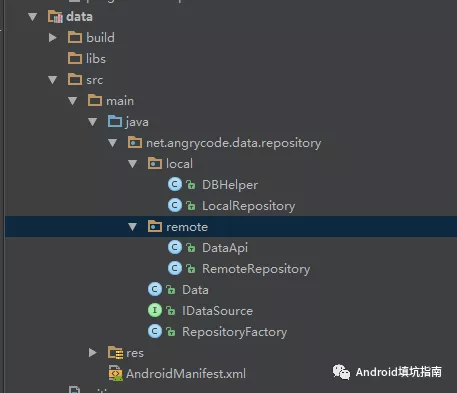

App 模块化之路——Repository模式
0x00 什么是 Repository 模式
Repository 这个词直译过来仓库、仓储的意思。这个意思其实也能反应出 Repository 模式作用。App 开发中少不了对数据的操作，数据的来源可能有很多种：网络、数据库、文件以及内存中的缓存。而 Repository 就相当于一个仓库管理员，管理这些数据的存储。当业务层想要获取或者存储数据时，只需要通过 Repository 的管理员进行操作。这样的好处就是：屏蔽数据来源的操作接口。对于业务层来说不必关心数据存在哪里，以及如何存储的。而且也符合我们组件化/模块化架构设计的思想。即当我们更换数据存储设备时，例如从 Android 系统 Sqlite 数据转换为第三方的数据库时，不会影响到业务逻辑。
0x01 设计模式
首先预览一下 Repository 模式的设计类图（欢迎拍砖）

IDataSource 是定义了数据来源接口，是根据具体的业务需要定义。一般来说，有增、删、改、查这几个方法。
LocalRepository 封装的是本地存储方式，实现 IDataSource 接口。
RemoteRepository 封装的是网络存储方式，实现 IDataSource 接口。
其中 LocalRepository 与 RemoteRepository 就是代表着各种存储方式的具体实现。而 RepositoryFactory 就是传说中的“仓库管理员”，管理着各种存储方式，它也是业务层与数据层交互的桥梁。
0x02 Show me the code
假设目前有个业务是获取远程数据的需求，如果本地有缓存数据则从本地获取，否则从网络中获取。这样的业务逻辑很常见，我们用 Repository
模式进行封装。
首先预览代码总体结构

IDataSource
public interface IDataSource<T> {
void add(T t);
void delete(T t);
void update(T t);
List<T> queryAll();
T queryById(int id);
}
LocalRepository
public class LocalRepository implements IDataSource<Data> {
public LocalRepository() {
}
@Override
public void add(Data data) {
DBHelper.get().add(data);
}
@Override
public void delete(Data data) {
DBHelper.get().delete(data);
}
@Override
public void update(Data data) {
DBHelper.get().update(data);
}
@Override
public List<Data> queryAll() {
return DBHelper.get().queryAll();
}
@Override
public Data queryById(int id) {
return DBHelper.get().queryById(id);
}
}
RemoteRepository
public class RemoteRepository implements IDataSource<Data> {
@Override
public void add(Data data) {
DataApi.get().add(data);
}
@Override
public void delete(Data data) {
DataApi.get().delete(data);
}
@Override
public void update(Data data) {
DataApi.get().update(data);
}
@Override
public List<Data> queryAll() {
return DataApi.get().queryAll();
}
@Override
public Data queryById(int id) {
return DataApi.get().queryById(id);
}
}
RepositoryFactory
public class RepositoryFactory implements IDataSource<Data> {
private IDataSource<Data> local;
private IDataSource<Data> remote;
private static RepositoryFactory INSTANCE;
/**
* 使用Map实现一个内存缓存
*/
HashMap<String, Data> mCache = new HashMap<>();
private RepositoryFactory(@NonNull IDataSource<Data> local, @NonNull IDataSource<Data> remote) {
this.local = local;
this.remote = remote;
}
public static RepositoryFactory get(@NonNull IDataSource<Data> local, @NonNull IDataSource<Data> remote) {
if (INSTANCE == null) {
INSTANCE = new RepositoryFactory(local, remote);
}
return INSTANCE;
}
public static RepositoryFactory get() {
if (INSTANCE == null) {
INSTANCE = new RepositoryFactory(new LocalRepository(), new RemoteRepository());
}
return INSTANCE;
}
public void destory() {
INSTANCE = null;
}
@Override
public void add(Data data) {
local.add(data);
remote.add(data);
mCache.put(String.valueOf(data.id), data);
}
@Override
public void delete(Data data) {
local.delete(data);
remote.delete(data);
mCache.remove(String.valueOf(data.id));
}
@Override
public void update(Data data) {
local.update(data);
remote.update(data);
mCache.put(String.valueOf(data.id), data);
}
/**
* @return
*/
@Override
public List<Data> queryAll() {
List<Data> list = local.queryAll();
if (list.isEmpty()) {
list = remote.queryAll();
}
return list;
}
/**
* 这里使用三级缓存获取一个Data对象
*
* @param id
* @return
*/
@Override
public Data queryById(int id) {
Data data = mCache.get(String.valueOf(id));
if (data == null) {
data = local.queryById(id);
}
if (data == null) {
data = remote.queryById(id);
}
if (data != null) {
mCache.put(String.valueOf(id), data);
}
return data;
}
}
使用示例
Flowable.fromCallable(new Callable<List<Data>>() {
@Override
public List<Data> call() throws Exception {
List<Data> dataList = RepositoryFactory.get().queryAll();
return dataList;
}
}).observeOn(AndroidSchedulers.mainThread())
.subscribeOn(Schedulers.io())
.subscribe(new Consumer<List<Data>>() {
@Override
public void accept(@NonNull List<Data> datas) throws Exception {
textView.setText("data size:" + datas.size());
}
}, new Consumer<Throwable>() {
@Override
public void accept(@NonNull Throwable throwable) throws Exception {
textView.setText(throwable.getMessage());
}
});
这里是直接使用了 RxJava2 进行调用，因为 Repository 是对数据的请求和访问，这个是耗时操作，故需要放在后台线程中进行。在实际的项目中一般都会使用 MVP 来封装这一层。
本文Demo ：wecodexyz/Componentization
参考文献：googlesamples/android-architecture